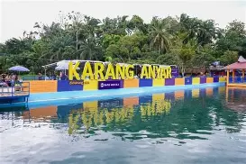

Alamat
Karang Anyer, Kecamatan Siantar Marihat, Kota Pematangsiantar, Sumatera Utara.
Buka di Google Maps →

Deskripsi
Karang Anyer Pematangsiantar adalah destinasi lokal yang namanya belum banyak terdokumentasi di sumber pariwisata resmi. Kemungkinan Karang Anyer di Pematangsiantar merupakan nama lokal untuk area rekreasi, bukit, atau spot wisata alam kecil yang digunakan oleh warga untuk kegiatan santai dan berfoto. Informasi mengenai luas, pemilik, dan fasilitasnya belum tersedia di publik.
Area Unggulan

Wisata Utama

Aliran Sungai Jernih

Tebing Batu Alam

Spot Foto Hijau
Spot Foto Populer

Latar Wisata

Spot Tebing Batu

Aliran Air Jernih

Hutan Hijau